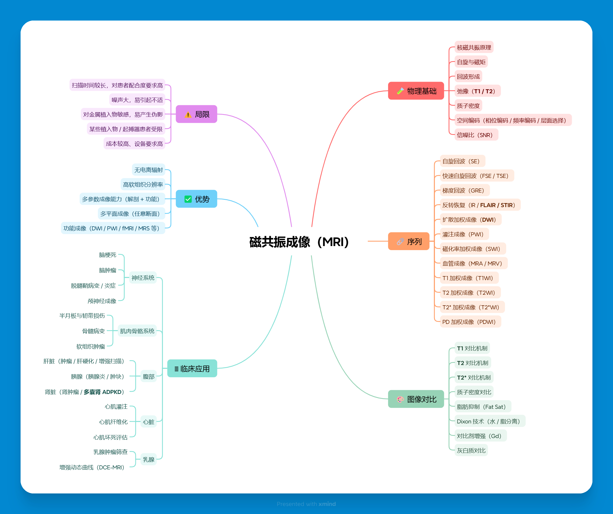

磁共振成像（MRI）知识图谱
作者：李晓茹，天津医科大学医学技术学部医学影像学专业本科生。 利用在线概念图 / 思维导图工具构建 磁共振成像（MRI） 相关知识的结构化图谱。
一、知识图谱概览
中心概念：磁共振成像（Magnetic Resonance Imaging, MRI）。 围绕 MRI 搭建了以下几个模块：物理基础、主要序列类型、图像加权与对比、典型临床应用以及技术优势与局限。

图：磁共振成像（MRI）知识图谱示意
二、图谱主要内容说明
1. MRI 物理基础
- 核磁共振现象：某些原子核在外加静磁场下会产生共振吸收与释放能量。
- 外加磁场 B0：决定共振频率与信号强度，是 MRI 系统的核心之一。
- 射频脉冲（RF）：激发自旋系统，使磁化矢量偏离平衡位置。
- T1、T2 弛豫：描述纵向与横向磁化恢复/衰减的时间常数，是图像对比形成的基础。
2. 常见 MRI 序列类型
- 自旋回波（SE）与快速自旋回波（FSE）：临床常用的基础序列，信噪比较高。
- 梯度回波（GRE）：适合三维成像、血管成像等，扫描速度快。
- 扩散加权成像（DWI）：用于脑梗死等病变的早期诊断。
- 功能 MRI（fMRI）：通过 BOLD 信号反映脑功能活动。
3. 图像加权与对比
- T1 加权像：解剖结构清晰，适合观察解剖细节和对比剂强化。
- T2 加权像：对含水量变化敏感，适合发现水肿、炎症、肿瘤等病变。
- PD 加权像：反映质子密度，部分序列中作为对比补充。
4. 典型临床应用
- 中枢神经系统检查（脑、脊髓）：脑肿瘤、脑梗死、多发性硬化等。
- 肌肉骨骼系统：韧带损伤、软组织肿瘤、骨髓病变等。
- 腹部与盆腔：肝脏、胰腺、子宫、卵巢等器官病变的评估。
5. MRI 的优势与局限
- 优势：无电离辐射，软组织分辨率高，多种成像加权方式，适合中枢神经系统及软组织病变评估。
- 局限：扫描时间较长，费用较高，对金属植入物、起搏器等患者存在检查限制。